GENEL
0,876DÜRÜST F1
TEKNOFEST 2026 · Güneydoğu Sağlıkta Yapay Zekâ Yarışması · Üniversite ve Üzeri
Missense genetik varyantlarda patojenik / benign sınıflandırma — dört panel, dört bağımsız karar paketi, sızıntısız doğrulama.

Dürüst çapraz doğrulamada panel ortalaması 0,92 F1 — ama asıl kanıt bu değil: naif taban modelin MCC'si 0,00 iken bizimki 0,56 – 0,79. Model gerçekten ayrım öğreniyor.
GENEL
0,876DÜRÜST F1
KANSER
0,924DÜRÜST F1
PAH
0,938DÜRÜST F1
CFTR
0,952DÜRÜST F1
panel / ekzom
frekans · korunmuşluk
▲ darboğaz · elle
klinik karar
Kazanan tarifi bulmak saatler sürer, çalıştırmak saniyeler. Tarif koda gömülü bir sayı değil; ayrı bir yapılandırma dosyasında durur ve bir insan onaylamadan değişmez.
4 panel · 3.802 varyant
353 kolon
durumsuz dönüşüm
351 → 442 kolon
null-importance (± ReliefF)
441 → 13–38
yalnız PAH / CFTR
yalnız eğitim katı
XGBoost × 3 seed
panel başına ayrı tarif
donmuş karar noktası
0,595 – 0,780
kalibre olasılık
patojenik / benign
91 türetilmiş öznitelik, altı aile — hepsi etiketten bağımsız.
441 aday, iki bağımsız istatistiksel filtre, panel başına 13–38 kolon.
| Panel | Seçim yöntemi | Kalan |
|---|---|---|
| GENEL | Hibrit (ReliefF-kapılı) | 38 |
| KANSER | Null-importance | 35 |
| PAH | Null-importance | 37 |
| CFTR | Null-importance | 13 |
GENEL'den, hedef panelde hiç görünmeyen varyantlar yalnızca eğitim katına eklenir. SMOTE değil: 442 boyutlu, %55 eksik bir uzayda sentetik profiller var olamaz.
| Panel | Panel satırı | + Ödünç | Oran |
|---|---|---|---|
| GENEL | 2.931 | — | 0,00 |
| KANSER | 388 | — | 0,00 |
| PAH | 372 | +2.676 | 1,00 |
| CFTR | 111 | +2.854 | 1,00 |
CFTR ROC-AUC. 21 satırla ayrım öğrenilemiyor — artırım burada bir iyileştirme değil, ön koşul.
5 dış kat × 3 tekrar. Öznitelik listesi, hiperparametreler ve karar eşiği önceden kilitli — tek soru şu: modelin hiç görmediği satırlarda ne aldığı.
| Metrik | GENEL | KANSER | PAH | CFTR |
|---|---|---|---|---|
| Varyant sayısı | 2.931 | 388 | 372 | 111 |
| Seçilen öznitelik | 38 | 35 | 37 | 13 |
| Dürüst F1 · 5×3 CV | 0,876 | 0,924 | 0,938 | 0,952 |
| Naif taban F1 | 0,846 | 0,817 | 0,909 | 0,896 |
| Dürüst ROC-AUC | 0,859 | 0,947 | 0,847 | 0,976 |
| MCC · naif taban 0,00 | 0,56 | 0,79 | 0,58 | 0,77 |
| Dengeli doğruluk · naif 0,50 | 0,79 | 0,89 | 0,72 | 0,90 |
| Doğruluk | %82,1 | %91,0 | %89,8 | %92,8 |
| Duyarlılık / Özgüllük | 0,86 / 0,71 | 0,94 / 0,85 | 0,99 / 0,45 | 0,94 / 0,86 |
| Donmuş karar eşiği | 0,670 | 0,705 | 0,595 | 0,780 |
Şekil 1 — Dürüst F1, naif tabana karşı. Naif taban zaten yüksek; kazanç birkaç puandır ve bunu saklamıyoruz.
Şekil 2 — Matthews korelasyon katsayısı (MCC). Naif tabanın MCC'si tam olarak 0,00 — gerçek katkı burada görünür.
ProtokolTekrarlı tabakalı 5 katlı çapraz doğrulama, 3 tekrar (5×3). Cross-panel augmentation her katta yeniden uygulanır; doğrulama yalnızca panelin kendi satırlarıyla yapılır.
Ne kilitli?Öznitelik listesi, hiperparametre paketi ve karar eşiği ölçümden önce dondurulur. Rapor edilen sayılar üretim modelinin kendisinden ölçülür; seed her yerde 42.
Açıkça söylediğimiz iki sınırHiperparametreler kat başına yeniden aranmaz — bu küçük bir iyimserlik payı bırakır. CFTR en yüksek skoru verir ama n = 111 ile en oynak paneldir.
| Panel | TN | FP | FN | TP | Hata |
|---|---|---|---|---|---|
| GENEL | 559 | 223 | 301 | 1.848 | %17,9 |
| KANSER | 102 | 18 | 17 | 251 | %9,0 |
| PAH | 28 | 34 | 4 | 306 | %10,2 |
| CFTR | 18 | 3 | 5 | 85 | %7,2 |
laboratuvar
lab'ın kendi çıktısı
triyaj · panel paketi
ACMG kanıt tartımı
hekim / danışman
TEKNOFEST verisi dışında hiçbir kaynak kullanılmadı; bu bir tercih değil, doğrulanabilir bir kısıt.
ClinVar, gnomAD, dbNSFP sorgulanmadı; AlphaMissense, ESM1b, REVEL gibi hazır model çıktısı eklenmedi. Kromozom ve pozisyon gizli, kolon adları anonim — eşleştirme teknik olarak da imkânsız. Tek dış bilgi sabit tablolar: BLOSUM, Grantham, fizikokimyasal ölçekler.
3.802 varyant bir kavram kanıtıdır, klinik kanıt değil. Her laboratuvar kendi kohortunda doğrulamalıdır; ileriye dönük doğrulama ve kazanılan uzman saati ölçümü henüz yapılmadı.
CFTR satırlarının ~%96'sı GENEL'den ödünç — bu saf bir CFTR modeli değil, GENEL → CFTR transferidir. PAH için de artırım oranı 1,00'dir.
Eğitim verimizde VUS yok; laboratuvarın en çok vakit kaybettiği yeri çözmüş gibi göstermiyoruz. Tanı yazılımı tıbbi cihaz kapsamındadır (TİTCK, IVDR/CE-IVD): kalite sistemi ve denetim izi şarttır.